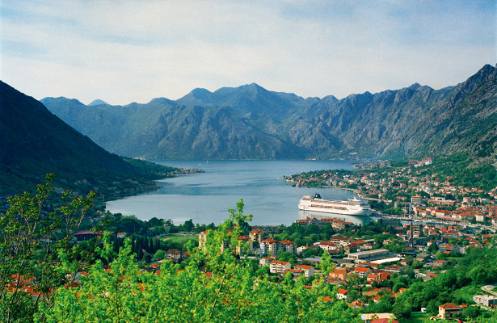
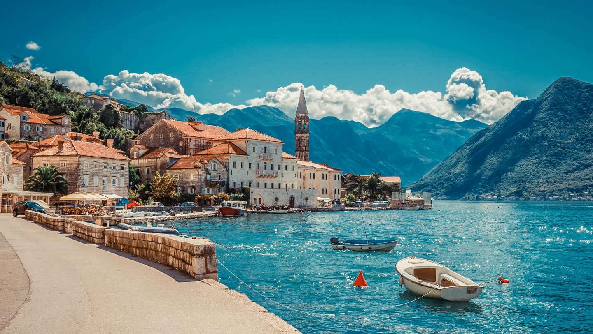
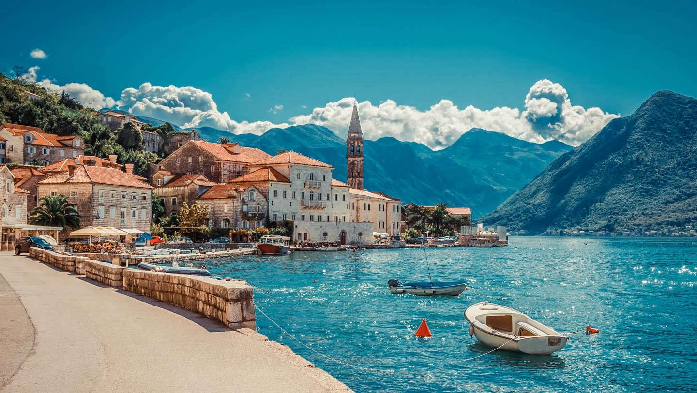

Черногория очень компактна — меньше, чем за день можно проехать на машине из одного конца страны в другой
Регионы и курорты Черногории
Туристический центр Монтенегро с песчаными пляжами, впечатляющей архитектурой и развлечениями на любой вкус. Главный курорт этого района — Будва, один из самых почтенных городов на Адриатике. Большой популярностью пользуется Бечичи, что в 3 км от Будвы. Город известен своим 2-километровым пляжем из мелкой гальки. Петровац — местечко в бухте с красногалечным пляжем и целой коллекцией памятников старины. Святой Стефан — самый престижный черногорский курорт, застроенный фешенебельными гостиницами. В 15 столетии здесь возвели крепость, защищавшую город от пиратов. В середине 20 века она превратилась в шикарный город-отель, где любят отдыхать голливудские звезды.
Другие курорты Будванской Ривьеры: Рафаиловичи, Милочер, Пржно, Бар, Сутоморе.
Расположена на севере побережья Адриатического моря. Крупнейший курорт этого района Герцег-Нови идеален для семейного отдыха. Здесь потрясающая природа и неплохие пансионаты — многие приезжают в Герцег-Нови поправить здоровье. Другой популярный курорт Гергеговской Ривьеры — Тиват. С него для большинства туристов и начинается Черногория — здесь расположен один из международный аэропортов. Город не может похвастаться старинной архитектурой и богатой историей. Гостей привлекают мягкий климат, хорошие пляжи и развитая инфраструктура. В пик сезона Тиват бывает слишком многолюдным.
Славится хорошими и при этом весьма демократичными отелями, всегда солнечной погодой и базальтовыми пляжами. Здесь всего 2 курорта: собственно Ульцинь и колоритный остров Ада-Бояна — одно из самых известных мест отдыха натуристов.
Жабляк и Колашин. На курорте Жабляк и летом не будет скучно. Туристам здесь предлагают полный набор активностей: от пеших туров и летних сплавов до катания на лошадях и полетов на параплане.
Виды Монтенегро
(Тиват)

Пляжи и дайвинг
Пляжи
Общая протяженность пляжей в Черногории — 73 км. Все они очень разные: от мелкого песка на юге до искусственных бетонных платформ на северо-западе побережья. Искусственные пляжи находятся в основном в Тивате, Герцег-Нови, Игало и Баре. Практически все пляжи расположены в укромных, закрытых от ветра и волн бухтах между крутыми скалами. В стране есть как весьма многолюдные пляжи, так и уединенные, и для «текстильщиков», и для нудистов, есть, наконец, пляжи платные и бесплатные. Аренда зонтиков и лежаков обойдется в 5-8 EUR в день. Постояльцы четырех- и пятизвездочных гостиниц, как правило, пользуются ими бесплатно.
Дайвинг
Не сказать, чтобы дайверы толпами штурмовали Адриатическое побережье, но свои поклонники у подводного мира Черногории есть. В водной толще прибрежных вод можно поплавать среди рифов и кораллов, а также обследовать несколько интересных рэков — на дне покоятся миноносец времен Второй мировой и австрийский военный корабль времен Первой, а также две субмарины, грузовые и фрахтовые корабли. На побережье работают дайвинг-клубы, где можно пройти обучение, взять напрокат оборудование и совершить погружение — как в непосредственной близости от берега, так и выйдя на лодке в открытое море.